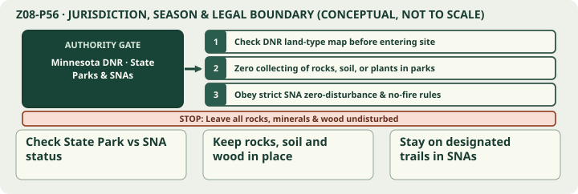

Z08-P56 · Rocks, minerals and materials · New manuscript
Minnesota State Parks and Scientific and Natural Areas Rules
Follow Minnesota DNR rules prohibiting rock, mineral, soil, fossil, and plant collection inside State Parks and SNAs.
When it applies · All Minnesota State Parks, State Recreation Areas, and Scientific and Natural Areas.
Equipment · Minnesota DNR park/SNA map and boundary signage.

Actions
- Verify DNR land designations before fieldwork because Minnesota State Parks prohibit removing rocks, minerals, fossils, soil, or live vegetation.[R09]
- Observe even stricter rules in Minnesota Scientific and Natural Areas (SNAs), which forbid all collecting, fires, camping, and habitat disturbance.[R10]
- Keep rockhounding and geological collection strictly outside State Park and SNA boundaries even along popular Lake Superior or river shorelines.[R09, R10, R11]
Failure recognition · Assuming Lake Superior beaches inside state parks allow agate picking violates state resource rules and degrades protected shorelines.[R09, R10]
Verify · Park and SNA boundaries are confirmed before entry and all geological features remain untouched.[R09, R10]
Stop or change course · Stop picking up any stone, driftwood, or soil the moment State Park or SNA boundary signs appear.[R09, R10]
Evidence and editorial notes
- R09 · Minnesota DNR · Minnesota State Park Rules and Resource Collecting Restrictions (Current web edition)
- Section: State park natural-feature protection · Conditions: Minnesota State Parks and Recreation Areas
Support: Removing rocks, minerals, soil, or live vegetation from Minnesota State Parks is prohibited to protect natural resources.
Limitations: Verify jurisdiction boundaries before picking up specimens even along shorelines or trails. · Conflicting evidence: None noted.
Editorial note: Bounds state-park material collection. · Specialist reviewer: Minnesota DNR resource manager
Primary source · checked 2026-11-25 - R10 · Minnesota DNR · Scientific and Natural Areas Visitor Rules and Prohibitions (Current web edition)
- Section: Scientific and Natural Areas strict preservation rules · Conditions: Minnesota Scientific and Natural Areas (SNAs)
Support: SNAs prohibit collecting any plants, rocks, minerals, wood, or natural materials and restrict off-trail disturbance.
Limitations: Check boundary signs and maps before fieldwork. · Conflicting evidence: None noted.
Editorial note: Enforces SNA zero-collection boundaries. · Specialist reviewer: Minnesota DNR SNA manager
Primary source · checked 2026-11-25 - R11 · Minnesota DNR · Lake Superior Agate and Public-Land Rock Collecting Guidelines (Current web edition)
- Section: Lawful public-land gravel-pit and road-cut rock collecting limits · Conditions: Unrestricted public gravel areas and authorized private land
Support: Where lawful, rock hounding requires landowner permission on private land and compliance with local safety and collecting limits.
Limitations: Private property, active quarries, road right-of-way hazards, and tribal lands carry separate prohibitions and trespass penalties. · Conflicting evidence: None noted.
Editorial note: Clarifies lawful vs prohibited rock collection. · Specialist reviewer: Public-lands and legal reviewer
Primary source · checked 2026-11-25
Source lineage · New manuscript (Z08 P16 collection restrictions) · Classification · New manuscript.